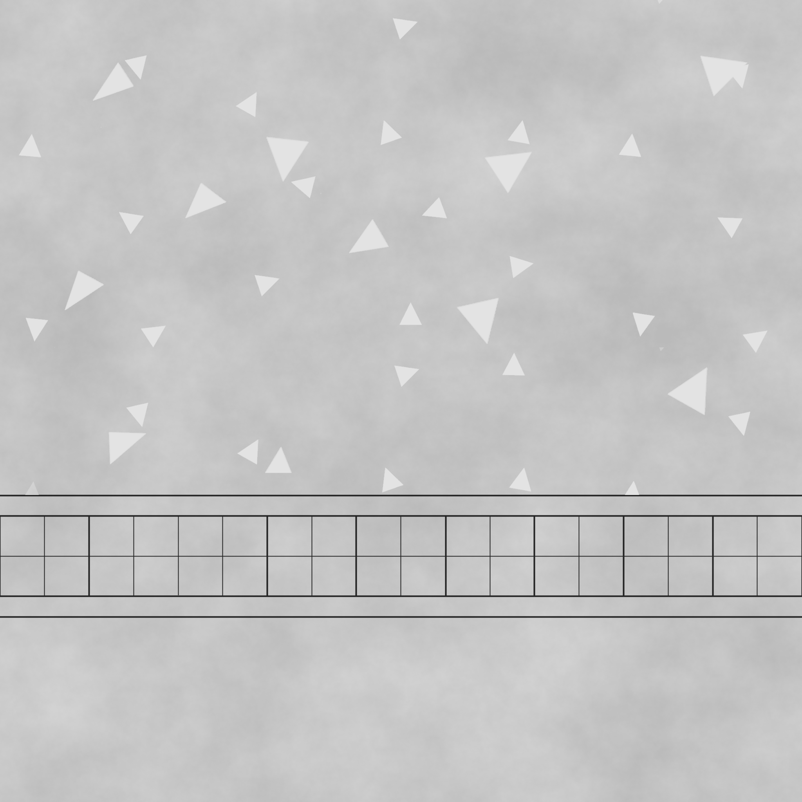
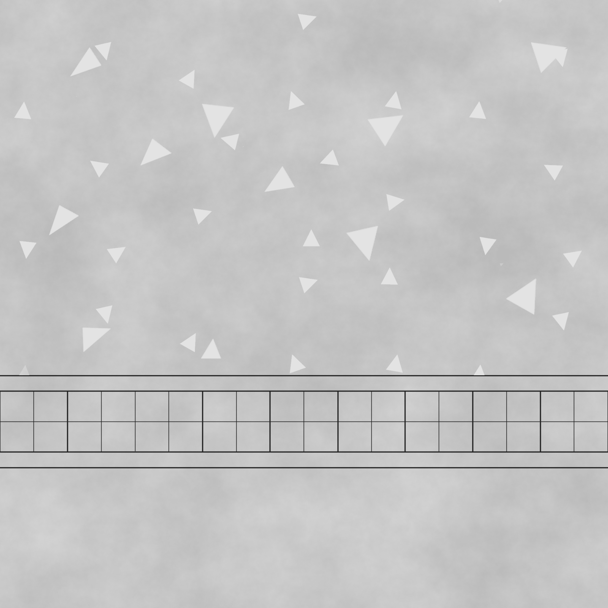
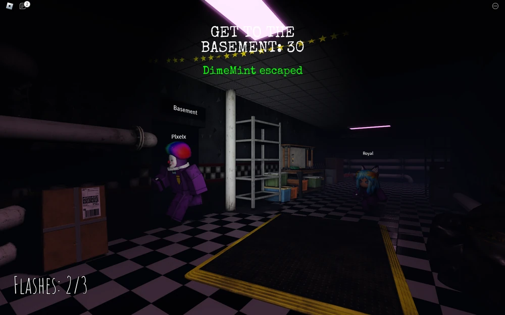
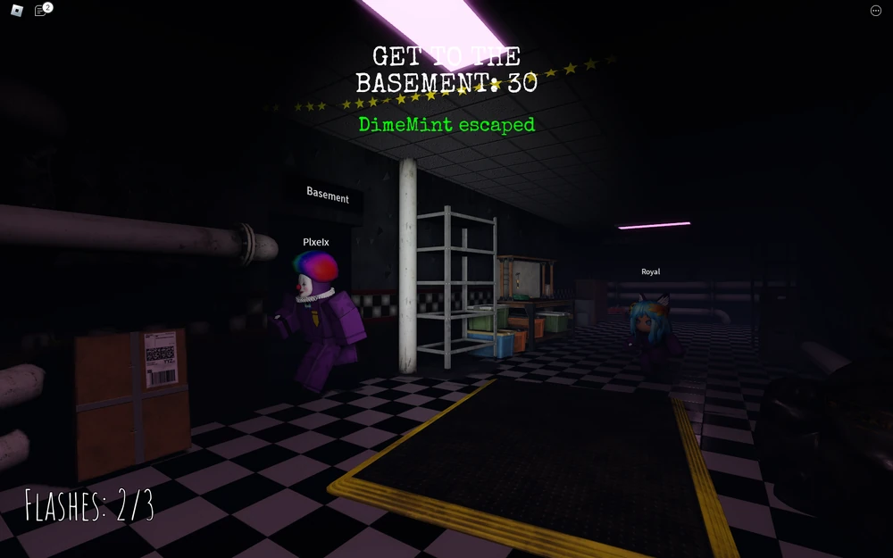
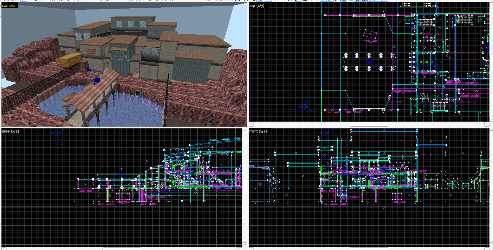
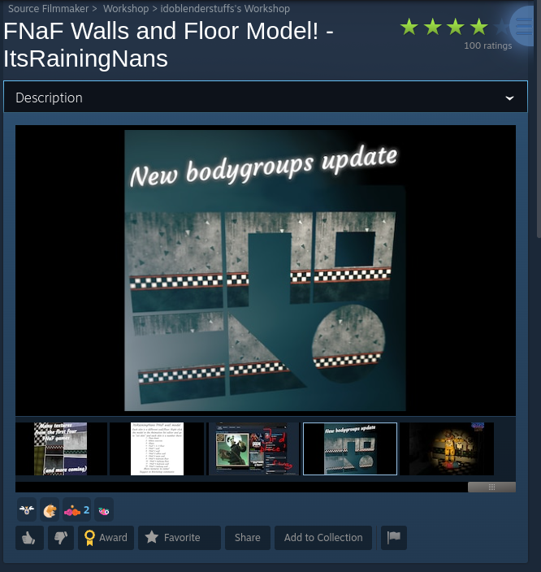
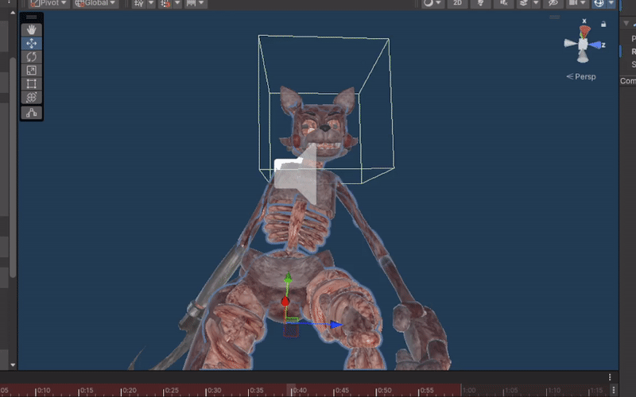
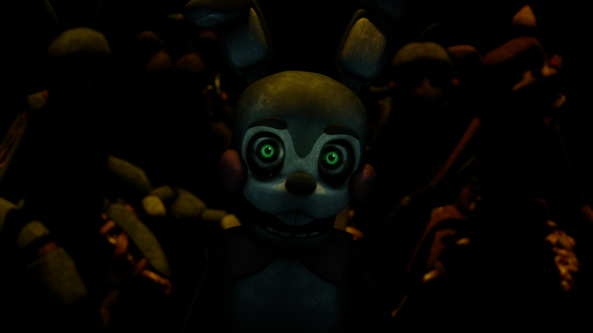

Bethany Tooze
Animation, Modelling, Art, Game Design, and other technical work
HTML Games
One of many games made with my and my mates for a laugh. Like 2048 but with physics, and some funny images. Likely the most fun game I've made and it took me a day.
Another one made for a joke with my mates. Parody of the FNaF series, but with my friends as the enemies, and each of their game mechanics corresponds to something funny about them.
An old game I made, like breakout with some extra steps. Realised just playing with the balls was more fun than breakout so I made that the whole game. Weirdly addicting, especially with the sound design.
Made a quick game to test people on how well they can distinguish colours from others. It's open source too, so someone even forked it with a bigger grid.
YouTube
I've made far more videos than this, but these are the main one's I'd show off. My current channel , idoblenderstuffs, has 3,000 subscribers. And my old one, ItsRainingNans, had about 1,800 subscribers. Most of my videos aren't public anymore. Around 230 have been made.
3D Modelling
Although mostly showcased in my YouTube, there are some other 3D modelling things to note. Some models have been remade but not shown in a video yet, and some renders are unseen.


Texture art
Somehow, my most significant work in texture art is this pack of wall textures. I just made these because the only other existing ones on the SFM workshop were really bad.
Download from Steam Workshop
 



These textures are seen in MANY animations from the past couple years, most notably:
They have even appeared in other people's games. For example, "FNaF: Co-op" on Roblox uses my wall textures a LOT. Sadly though, they don't use my floor textures, which makes them look a little out of place.
 

Source Engine stuff
I've done my fair share of dabbling into Source Engine projects, a very old game engine made by Valve.
For example, a map I've been working on for Half Life: Deathmatch:
There are also my several Source FilmMaker ports, including the afformentioned wall models. I've made many, many more. But they are probably lost to time. Most were not posted to the Steam Workshop, so they're lost on my old PC.
Or this other GoldSrc map I made to test some funky reflection stuff.

I even made some of my own tools for Source Engine porting! Mainly, my VMT and QC maker programs.
Current project
My current project is a game called My Sweetest Dream.
It is a survival horror point and click adventure game, aiming to have around 12 chapters on release.

Currently still working on Chapter 1. Everything seen so far is likely to be changed or redone.
The game is being developed in Unity 3D, although I'm considering switching to being a Unity 2D game. For simplicity and aesthetic reasons.
Chapter 1 follows a girl named Charlotte. Her little brother seemingly runs away to an abandoned park ride. She ventures into the building, unprepared for what has truly happened to her brother, and what inevitably happens to her.
Although seemingly insignificant on their own, every chapter plays a vital role in the overall plot. Chapter 1 would be around 20 minutes of gameplay, while every other chapter would aim for at least an hour.
The game takes a lot of inspiration from old adventure games like Garage: Bad Dream Adventure, and combines it with themes seen in modern Resident Evil games, while still remaining in the Five Nights at Freddy's setting. Including a lot of existential horror elements, really striving to innovate in the otherwise stale state of horror in the FNaF fangames field.
This game will likely take multiple years to make. Alongside it having a couple revisions or resets on the development. As afformentioned, Right now, I'm likely to scrap the current working version of the game for a slightly simpler and prettier approach to things.
Other projects
This website you're on right nowWebsite being made for iMedia GSCE class
Unblocked games site (blocked)
ScratchJr made in Scratch
Contacts
@idoblenderstuffs on YouTube, Discord, and Steam
bftsfm@gmail.com and bethanytooze@gmail.com